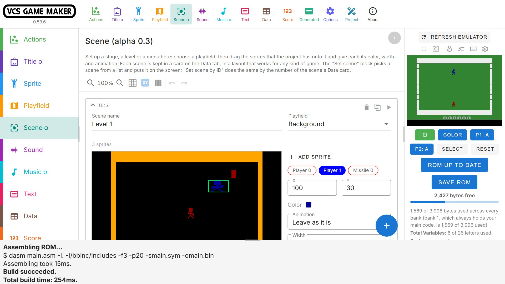
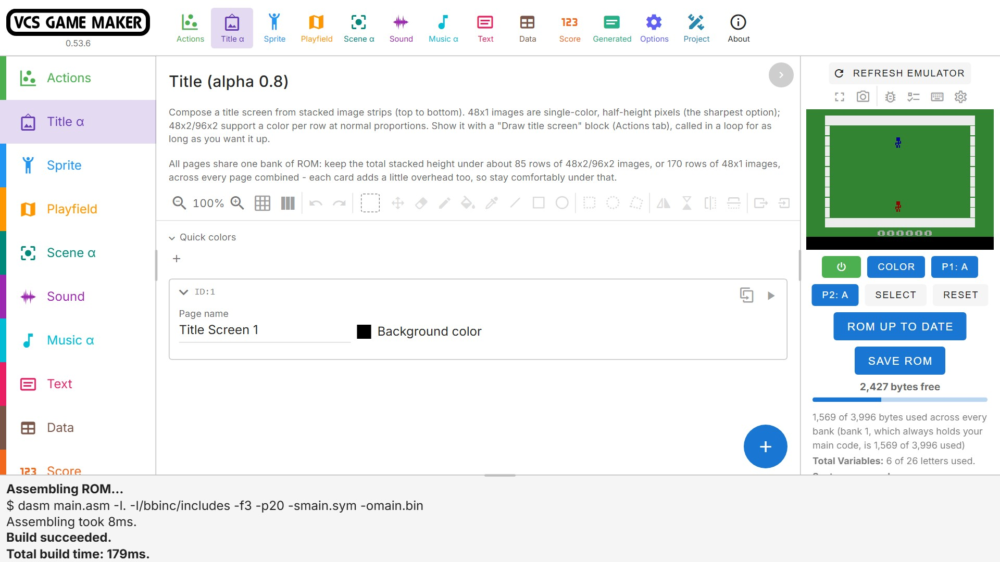

Draw sprites with extensive built-in drawing tools, or import files from Aseprite, automatically creating all of your animations with perfect frame timing.
Build Atari 2600 games with blocks.

VCS Game Maker is a visual development environment for building Atari 2600 games. Design your game's logic with Blockly blocks, and behind the scenes VCSGM generates batari Basic source code (along with a bit of assembly), compiles it into an Atari 2600 ROM, and runs it in the built-in emulator preview, using either 6502.ts or Gopher2600.
This is very much a work-in-progress.
Download VCS GAME MAKER
Features
Blocks in,
ROM out
Put the logic of your game together from Blockly blocks. VCS Game Maker then writes batari Basic (and a little assembly), compiles it into an Atari 2600 ROM.
Standard & DPC+ kernels
Use the Standard kernel, or upgrade to the DPC+ kernel (wip) for more sprites, a taller playfield, per-row colors and a coprocessor.
sound & music
Design sound effects with envelopes, arpeggios and slides. Draw waveforms for the DPC+ sound chip, and compose songs in a full-featured music editor.
Runs ON... WHATEVER
Use it in the browser or install the desktop app. Supports Windows, macOS, and Linux.
VIEW code,
BUILD ON IT
The Generated tab shows the batari Basic created by your blocks, so you can read it, learn from it and build on it in other game development software.
Examples & sound banks
Download example projects, music, instrument and sound effect banks directly inside the app.
Sprites & animation
BACKGROUNDS & PlayfieldS
Draw full-screen playfield backgrounds in the editor. It has the same drawing tools as the sprite editor, with per-row playfield and background colors. Preview backgrounds directly in the emulator so you can get things pixel-perfect easily.

Scenes
Set up a Stage, Level or Menu in the Scene tab: pick a playfield, then drag your sprites to its starting positions. Set color, width and animation. A single “Set scene by Name” block puts the whole Scene on screen, and “Set scene by ID” lets you set Scene by ID. Scene data is kept for each scene on the Data tab, and a the play button lets you preview the Scene directly in the emulator.

Sound & music
Make sound effects and songs without writing any code. The sound effect editor shapes TIA sounds with envelopes and arpeggios, and on DPC+ lets you directly waveforms.
The music editor lets you builds songs from patterns, with downloaded or custom instruments designed on the Sound tab.

Text & scores
The Text minikernel shows messages on screen, by text name or ID. VCS Game Maker additions include up to 2 lines of text on-screen with independent line colors, scrolling text, and multi-line dialog text up to 255 characters long.
The score is a six-digit display (or five, if you prefer) that your blocks can set, add to and read. Pick a built-in font, a compact Squish font that frees room for the text rows, or draw custom digits, and give the score row a background color that can differ from the playfield's.

Title screens
Design and animate high-quality, full-color title screens in the editor, and display them with built-in Title Screen kernel support. Build each screen from stacked image strips and add as many pages as you like. Strips can be a single color for the sharpest result, or give each row a different color. The editor has the same drawing tools as the other graphics editors, and you can import and export images.

USE IT YOUR WAY
Pick the look that suits you in the Options tab. Dark Mode, Subdued Palette, High Contrast and Expert Mode allow you to customize the VCS Game Maker UI to your preferences.


Latest updates
Version 0.53.9 (release page)
The Sound tab turns recordings into DPC+ sounds: Import audio files (WAV, OGG, MP3...) fits each file to a waveform of 24 or 32 bars with its pitch, length and volume changes, a sound card has a play button, and a waveform can be drawn by hand as a custom shape.
Big DPC+ title screens fit in their bank more often: graphics share one setup routine and rows of a single color take one byte, and a title screen no enabled Draw title screen block uses is left out of the ROM. DPC+ also got Check playfield and Bounce that read the ball from its top line, working Stop playfield rainbow and Stop player colors, separate copy and paste buttons for playfield and background row colors, RAM variables in the debug overlay, and graphic editor hotkeys that switch their tool off when pressed again.
UI performance improvements.
Version 0.53.8
DPC+ player 0 animation and Set invisible work with a title screen, score padding on DPC+, less canvas lag, and the playfield preview shows after a build.
Version 0.53.7
DPC+ projects that were a few bytes too big for the kernel bank compile again, the title screen preview works after a build of a project with several title pages, and the macOS apps are signed so Apple Silicon does not say the package is corrupted.
Version 0.53.6
The AtariVox can speak: new blocks in the Sound category say a message from the Text tab. Speech can be started immediately, or queued for after the current speech ends.
Fixed the gopher2600 emulator, which did not start in versions 0.53.1 to 0.53.3. The title screen Play button works for projects with big title screens.
Fixed the page freezing when you leave the Music tab after playing music or sounds (the sound code added watchers to the open tab for every note, millions after a song, and closing the tab took minutes). The Music tab also opens about three times faster with a big pattern open: the piano roll is drawn a moment after the rest of the tab.
Fixed a memory leak that made the app slower and slower until the browser or the desktop app crashed: every visit to the Music, Sound or Data tab kept the whole tab in memory. Memory now stays flat however often you switch tabs.
The Play button of a Title tab page works again for a project with big title screens: the preview compiles the page it shows only.
New "Playfield transition to [background] scrolling [Up/Down]" block: another background scrolls in over the one showing, a row at a time, with the Playfield scroll blocks you already use, instead of swapping to it at once (standard kernel).
Text on title screens works with the DPC+ kernel. With 5 score digits on DPC+ the first letter of a text line no longer loses its last pixel, and on the standard kernel the five digits next to the Text Minikernel are drawn whole, with nothing after the last one.
The emulator picture is 4:3 like an NTSC TV, and gopher2600 is newer, with AtariVox speech (an Emulator Settings switch for the Player 2 port). The macOS Apple silicon download is gone for now: that build does not work yet.
DPC+ games use fewer cycles (finished one-shot animations are not entered again, joystick directions are read in assembly), title screen data is packed into fewer pages, and a title screen that does not fit its bank says so.
Version 0.53.0
A deleted card can be undone and redone on every tab. Scene cards have a preview button and show the scene name, with block-colored sprite pills; the Sound tab's columns toggle is a toolbar icon; the Project page cards show TIA / ARM.